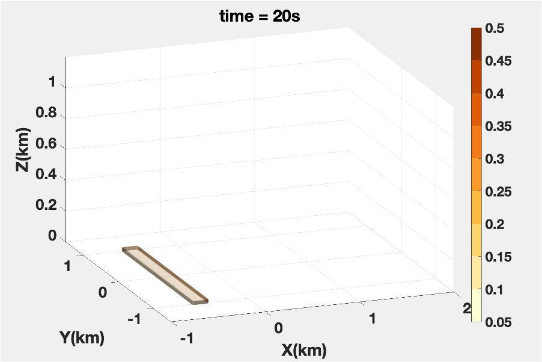
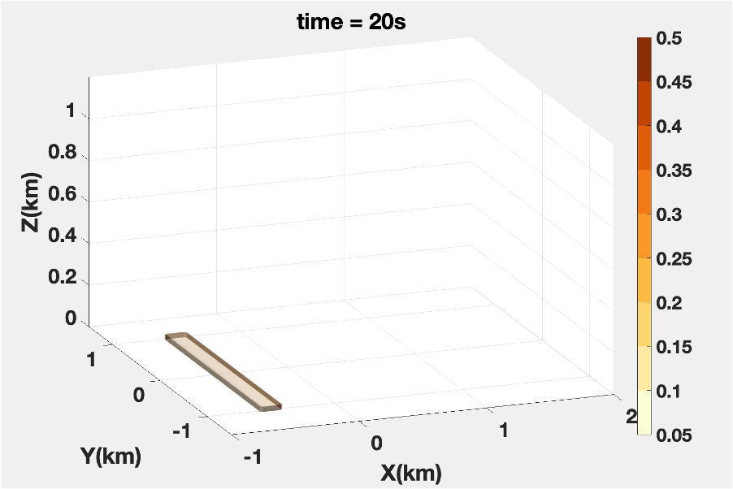
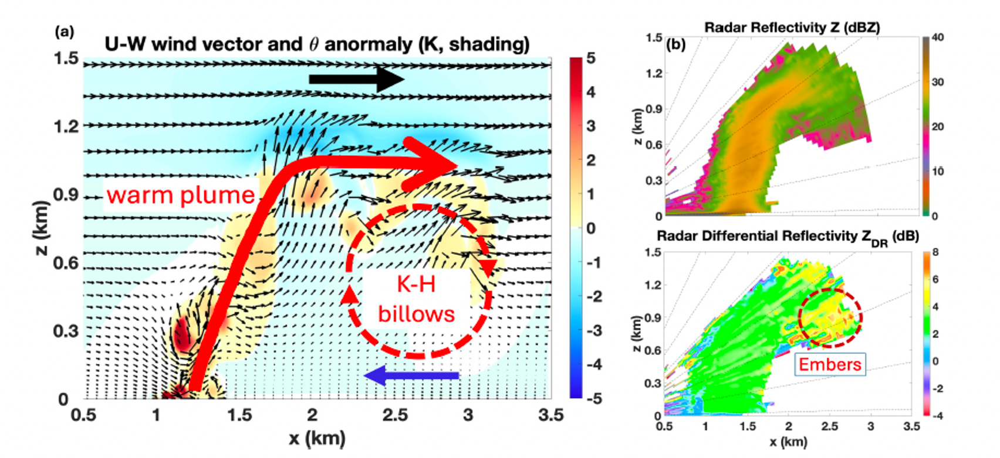
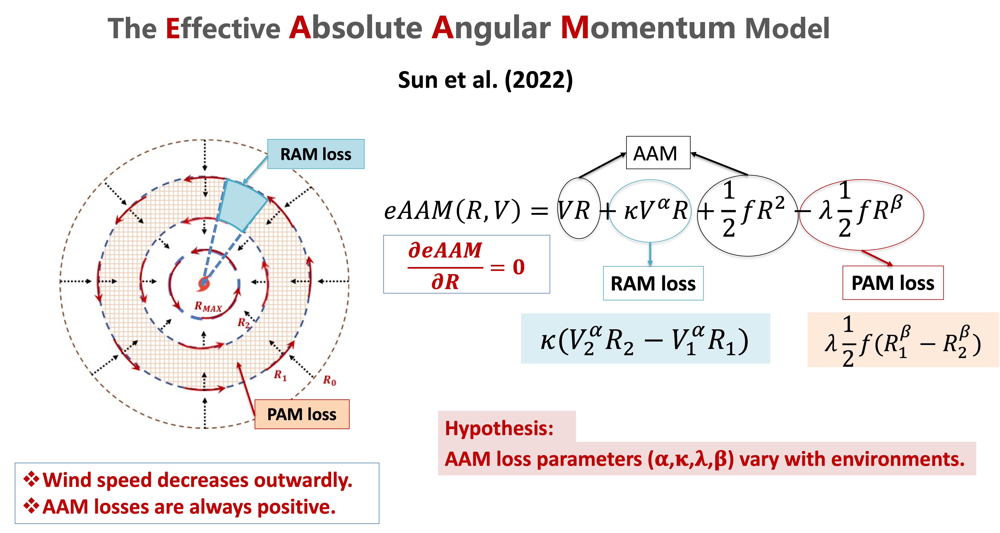
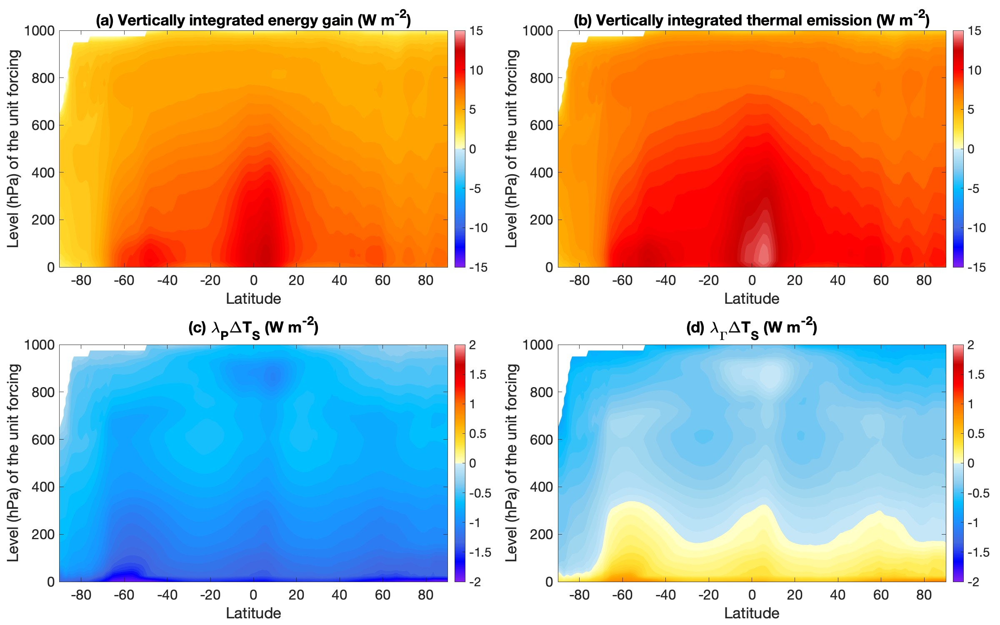

Wildland Fire - Plume Dynamics

 


My research investigates the multi-scale processes governing wildland fire generated plume behavior, smoke transport, and firebrands caused sportting in complex terrain and various atmospheric conditions. I use numerical models and radar observations to understand the coupling between fire-induced flows and ambient atmospheric conditions.  I incorporated the stability theory of atmospheric waves into plume dynamics to investigate the mechanism behind the large billow-like eddies observed in the plume head. These eddies play a critical role in fire spotting and near-ground smoke concentration.
Tropical Cyclone Intensity-Size Relation and Forecast

Tropical cyclone (TC) intensity and size are key factors determining the severity of associated hazards.
However, the forecast skill for both remains limited.
To address this, we introduce a new radially invariant variable, effective absolute angular momentum (eAAM), to describe the relationship between TC intensity and size.
Unlike traditional angular momentum, eAAM remains constant for a steady-state TC and accounts for angular momentum loss.
In the eAAM framework, TC intensity and size are linearly related.
More importantly, given easily observed wind speed and radius data—typically at
low wind thresholds of several m/s—one can infer the internal structure of a TC, including its intensity and size.
We are currently testing this approach for real-time prediction of TC intensity and size.
Forecasts and archived results can be found at: https://amccao.wixsite.com/hurricanewindprofile.
Ongoing work explores how environmental factors such as vertical wind shear, ocean heat content,
and inner-core dynamics influence angular momentum loss in the eAAM model,
aiming to further improve storm-specific forecasts under varying conditions.
Climate Feedbacks and Sensitivities

We introduce a novel Energy Gain Kernel (EGK) climate feedback frameworks for analyzing climate feedback progresses.
Specially, to reconcile the apparent "negative" lapse rate feedback, we compare the traditional TOA-based partial radiative perturbation (PRP) method with the energy gain kernel (EGK) framework,
which treats temperature feedback as a multiplicative amplifier of energy perturbations.
In the EGK framework, warming-induced thermal emissions are repeatedly absorbed and re-emitted throughout the atmosphere until
a new equilibrium is reached, leading to strong amplification of input energy—highlighting
the positive aspect of temperature feedback.
This process also ensures energy balance at all layers, including the TOA, through thermal emissions,
which represent its negative aspect.
The TOA energy balance involves external forcing, non-temperature feedbacks,
and OLR changes from temperature feedback.
Lapse-rate feedback reflects the vertical placement of energy perturbations:
it is positive for low-level inputs and negative for upper-level ones.
Because radiative energy perturbations typically decrease with height,
lapse-rate feedback appears mostly positive. However, non-radiative processes
like convection can offset this, weakening surface feedback and enhancing upper-atmosphere
feedback—explaining the overall negative lapse-rate feedback observed in the tropics.